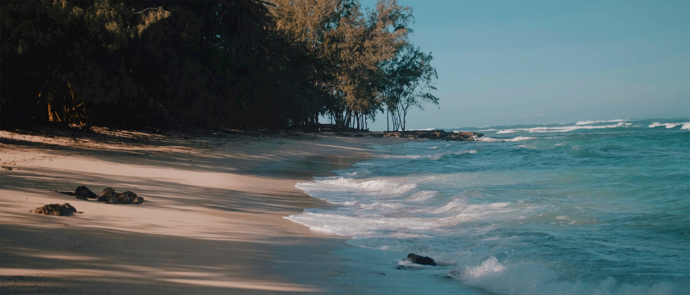
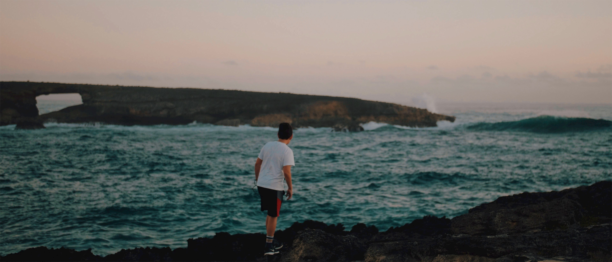

- Жовта річка в Китаї та річка Колорадо в Сполучених Штатах, більше не впадають в океан через надмірне споживання води.
- Запаси підземних вод також виснажуються великими темпами на всіх континентах.
- Щонайменше 1,7 мільярда людей на всій планеті споживають питну воду, забруднену фекаліями. Це забруднення становить значний ризик для людини та може викликати такі захворювання, як холера, діарея, дизентерія та поліомієліт.
- Кожен з нас щодня витрачає в середньому близько 300 літрів води.
- А за рік кожен з нас використовує 1,5 мільйонів літрів води.
- За прогнозами вчених до 2025 року дві третини населення нашої планети будуть відчувати нестачу якісної питної води.
- Азія має найбільший глобальний водний слід.

Скільки води потрібно для виробництва…
- Літр водопровідної води - 1 літр
- Бутильована вода (1 літр) - 5 літрів
- 1 чашка чаю - 30 літрів
- 1 чашка кави - 140 літрів
- 1 кілограм кукурудзи - 900 літрів
- 1 кілограм пшениці- 1300 літрів
- 1 кілограм соєвих бобів -1800 літрів
- 1 кілограм хлібу - 960 літрів
- 1 цілий апельсин- 50 літрів
- 1 стакан апельсинового соку - 170 літрів
- 1 ціле яблуко- 70 літрів
- 1 стакан яблучного соку - 190 літрів
- 1 кілограм курячого мʼяса - 3900 літрів
- 1 кілограм яловичини - 15500 літрів
У побуті нам потрібно…
- 180-270 літрів води для ванни на 1 особу
- 5 літрів води для прибирання
- 5 літрів води для поливу рослин
- 5 літрів води для пиття та приготування їжі
- 50 літрів для одного прання
- 11-15 літрів при кожному змиванню туалету
- 60 літрів води для 5 хвилинного душу
- 12 літрів для хвилинного миття рук
- 100-150 літрів води для миття посуду, фруктів та овочів

Water footprint (водний слід) - це вода, яка необхідна споживачеві або виробнику для виробництва певних товарів та послуг, які він використовує.
Personal water footprint (особистий водний слід), - це вода, яка необхідна для виробництва товару, який споживає особа та дій, які вона здійснює.
Розрахунок водного сліду потрібен для оцінки того, чи є використання води екологічно стійким і справедливо розподіленим.